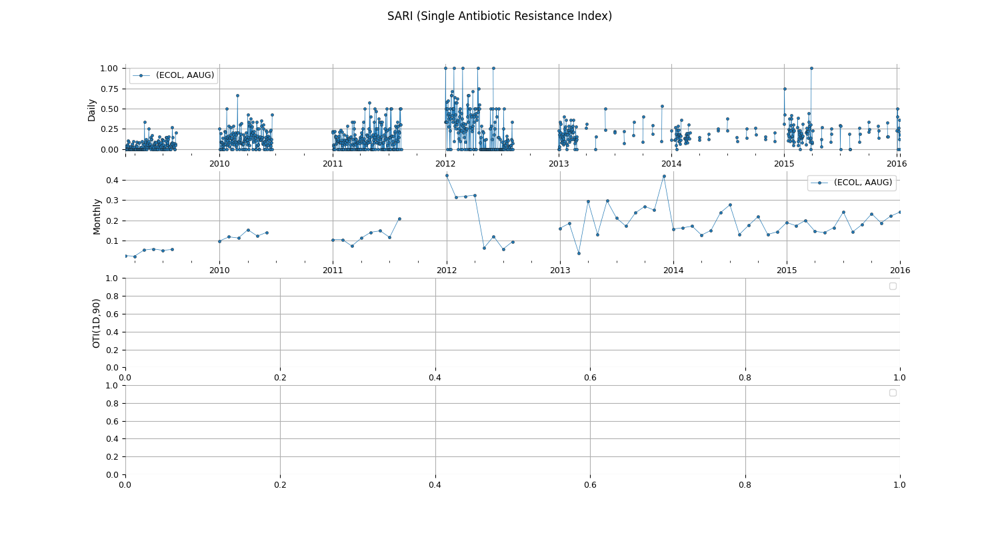

Note
Click here to download the full example code
Index - SARI¶
Example using your package
Out:
c:\users\kelda\desktop\repositories\virtualenvs\venvpy39-datablend\lib\site-packages\sphinx_gallery\gen_gallery.py:201: DtypeWarning: Columns (11) have mixed types.Specify dtype option on import or set low_memory=False.
return 0., func()
No handles with labels found to put in legend.
No handles with labels found to put in legend.
9 10 11 12 13 14 15 16 17 18 19 20 21 22 23 24 25 26 27 28 29 30 31 32 33 34 35 36 37 38 39 40 41 42 43 44 45 46 47 48 49 50 51 52 53 54 55 56 57 58 59 60 61 62 63 64 65 66 67 68 69 70 71 72 73 74 75 76 77 78 79 80 81 82 83 84 85 86 87 88 89 90 91 92 93 94 95 96 97 98 99 100 101 102 103 104 105 106 107 108 109 110 111 112 113 114 115 116 117 118 119 120 121 122 123 124 125 126 127 128 129 130 131 132 133 134 135 136 137 138 139 140 141 142 143 144 145 146 147 148 149 150 151 152 153 154 155 156 157 158 159 160 161 162 163 164 165 166 167 168 169 | # Import libraries
import sys
import glob
import pandas as pd
import seaborn as sns
import matplotlib as mpl
import matplotlib.pyplot as plt
# Import specific libraries
from pyamr.core.freq import Frequency
from pyamr.core.sari import SARI
# Set matplotlib
mpl.rcParams['xtick.labelsize'] = 9
mpl.rcParams['ytick.labelsize'] = 9
mpl.rcParams['axes.titlesize'] = 11
mpl.rcParams['legend.fontsize'] = 9
# -----------------------
# Load data
# -----------------------
# -------------------------
# Constants
# -------------------------
# Replace codes
replace_codes = {
'9MRSN':'MRSCUL',
'URINE CULTURE':'URICUL',
'WOUND CULTURE':'WOUCUL',
'BLOOD CULTURE':'BLDCUL',
'SPUTUM CULTURE':'SPTCUL',
'CSF CULTURE':'CSFCUL',
'EYE CULTURE':'EYECUL',
'GENITALCUL':'GENCUL',
'NEONATAL SCREEN':'NEOCUL',
}
# Interesting columns
usecols = ['dateReceived',
'labNumber',
'patNumber',
'orderCode',
'organismCode',
'antibioticCode',
'sensitivity']
# Path
path = '../../resources/data/nhs/susceptibility/complete/'
# -------------------------
# Main
# -------------------------
# Load all files
data = pd.concat([ \
pd.read_csv(f, parse_dates=['dateReceived'],
usecols=usecols, nrows=100000)
for f in glob.glob(path + "/*.csv")])
# Replace
data.organismCode = \
data.organismCode.replace(replace_codes)
# Drop duplicates
data = data.drop_duplicates()
# Keep only relevant columns
data = data[['antibioticCode',
'organismCode',
'dateReceived',
'sensitivity']]
# Filter for two examples
is_org = data['organismCode'] == 'ECOL'
is_abx = data['antibioticCode'].isin(['AAUG'])
data = data[is_abx & is_org]
# -------------------------
# Create frequency instance
# -------------------------
# Create instance
freq = Frequency(column_antibiotic='antibioticCode',
column_organism='organismCode',
column_date='dateReceived',
column_outcome='sensitivity')
# Compute frequencies daily
daily = freq.compute(data, strategy='ITI',
by_category='pairs',
fs='1D')
# Compute frequencies monthly
monthly = freq.compute(data, strategy='ITI',
by_category='pairs',
fs='1M')
"""
# Compute frequencies overlapping
oti_1 = freq.compute(data, strategy='OTI',
by_category='pairs',
wshift='1D',
wsize=90)
"""
# -------------------------
# Create sari instance
# -------------------------
# Create instance
sari_daily = SARI(strategy='hard').compute(daily)
sari_monthly = SARI(strategy='hard').compute(monthly)
#sari_oti_1 = SARI(strategy='hard').compute(oti_1)
# -------
# Plot
# -------
# Show comparison for each pair
f, axes = plt.subplots(4, 1, figsize=(15, 8))
# Flatten axes
axes = axes.flatten()
# Plot ITI (monthly)
for i, (pair, group) in enumerate(sari_daily.groupby(level=[0, 1])):
group.index = group.index.droplevel([0, 1])
group['sari'].plot(marker='o', ms=3, label=pair,
linewidth=0.5, markeredgecolor='k', markeredgewidth=0.3,
ax=axes[0])
# Plot ITI (monthly)
for i, (pair, group) in enumerate(sari_monthly.groupby(level=[0, 1])):
group.index = group.index.droplevel([0, 1])
group['sari'].plot(marker='o', ms=3, label=pair,
linewidth=0.5, markeredgecolor='k', markeredgewidth=0.3,
ax=axes[1])
"""
# Plot OTI (daily with size 30)
for i, (pair, group) in enumerate(sari_oti_1.groupby(level=[0, 1])):
group.index = group.index.droplevel([0, 1])
group['sari'].plot(marker='o', ms=3, label=pair,
linewidth=0.5, markeredgecolor='k', markeredgewidth=0.3,
ax=axes[2])
"""
# Set legend
for ax in axes:
ax.legend()
ax.set_xlabel('')
ax.grid(True)
# Set titles
axes[0].set_ylabel('Daily')
axes[1].set_ylabel('Monthly')
axes[2].set_ylabel('OTI(1D,90)')
# Despine
sns.despine(bottom=True, left=True)
# Set title
plt.suptitle("SARI (Single Antibiotic Resistance Index)")
# Show
plt.show()
|
Total running time of the script: ( 0 minutes 2.027 seconds)